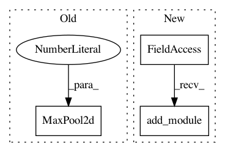

b2074ddf9d8bc2069d66976fea58a52f40238496,pretrainedmodels/nasnet.py,ReductionCell0,__init__,#ReductionCell0#Any#Any#Any#Any#,278
Before Change
self.comb_iter_3_left = nn.AvgPool2d(3, stride=1, padding=1)
self.comb_iter_4_left = TwoSeparables(out_channels_right, out_channels_right, 3, 1, 1, bias=False)
self.comb_iter_4_right = nn.MaxPool2d(3, stride=2, padding=1)
def forward(self, x_left, x_right):
x_left = F.relu(x_left)
x_left = self.conv_left(x_left)
After Change
def __init__(self, in_channels_left, out_channels_left, in_channels_right, out_channels_right):
super(ReductionCell0, self).__init__()
self.conv_prev_1x1 = nn.Sequential()
self.conv_prev_1x1.add_module("relu", nn.ReLU())
self.conv_prev_1x1.add_module("conv", nn.Conv2d(in_channels_left, out_channels_left, 1, stride=1, bias=False))
self.conv_prev_1x1.add_module("bn", nn.BatchNorm2d(out_channels_left, eps=0.001, momentum=0.1, affine=True))
self.conv_1x1 = nn.Sequential()
In pattern: SUPERPATTERN
Frequency: 3
Non-data size: 3
Instances
Project Name: Cadene/pretrained-models.pytorch
Commit Name: b2074ddf9d8bc2069d66976fea58a52f40238496
Time: 2017-11-16
Author: remi.cadene@icloud.com
File Name: pretrainedmodels/nasnet.py
Class Name: ReductionCell0
Method Name: __init__
Project Name: osmr/imgclsmob
Commit Name: 395b1fc3df754c21a6b7aebc79a1d950bfdc1efc
Time: 2018-10-29
Author: osemery@gmail.com
File Name: pytorch/pytorchcv/models/darknet.py
Class Name: DarkNet
Method Name: __init__
Project Name: osmr/imgclsmob
Commit Name: 2e7f747cdc99a5bc7e365b1b76edb4fdc26be4f1
Time: 2019-02-26
Author: osemery@gmail.com
File Name: pytorch/pytorchcv/models/others/oth_fractalnet_cifar10_2.py
Class Name: FractalNet
Method Name: __init__